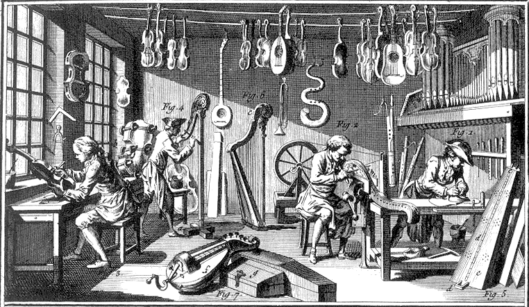

Por qué hace falta un método
Todo el mundo sabe resolver problemas. Lo que no todo el mundo sabe es hacerlo de forma que el resultado no dependa de la suerte.
Un problema de verdad, de los que pasan en un instituto:
Tenéis cinco minutos y una hoja. Resolvedlo. Sin instrucciones, sin método, sin que yo os diga nada más.
Comparad lo que habéis escrito. Muy probablemente cada grupo tenga una cosa distinta: unos habrán dibujado un mueble, otros habrán escrito una idea en una línea, otros no habrán pasado de discutir. ¿Cuál de las soluciones es la buena?
No se puede saber. Y ese es el problema: no porque las ideas sean malas, sino porque no hay forma de compararlas. Nadie ha dicho cuántos abrigos, ni cuánto puede costar, ni de qué se hace, ni cómo se sabría si funciona.
Lo que acaba de fallar
No os ha fallado la creatividad. Os ha fallado el orden. Os habéis puesto a dar soluciones antes de saber qué tenía que cumplir la solución.
Esto le pasaba también a la gente que fabricaba cosas hace doscientos años. Un artesano resolvía el problema en su cabeza, y el resultado dependía de su experiencia. Funcionaba mientras las cosas eran sencillas y las hacía una sola persona. En cuanto hubo que fabricar miles de piezas iguales, en sitios distintos y entre varias personas, dejó de valer: hacía falta una forma de trabajar que otro pudiera seguir.
Definición
El proceso tecnológico es el orden de pasos que se sigue para pasar de una necesidad a un objeto que la resuelve, de forma que el resultado no dependa de la inspiración de quien lo hace y otra persona pueda continuar el trabajo.

Esto es exactamente el problema de esta sesión. Aquel saber vivía solo en la cabeza y en las manos de los artesanos, y se perdía con ellos. La Encyclopédie fue el primer intento serio de escribirlo para que otro pudiera seguirlo: cientos de láminas como esta, durante veinte años. Poner un método por escrito no es burocracia, es lo que hace que el conocimiento sobreviva a quien lo tiene. Laurent Grillet · Dominio público · Wikimedia Commons
Los pasos
Los siete pasos
- Detectar la necesidad. Qué falta y a quién le falta.
- Analizar el problema. Qué condiciones tiene que cumplir la solución. A esto se le llaman requisitos, y es el paso que os habéis saltado.
- Buscar ideas. Varias, no una. Cuantas más, mejor la elegida.
- Elegir y diseñar. Escoger una con un criterio, y concretarla: medidas, materiales, piezas, dibujos.
- Planificar. Quién hace qué, con qué y en cuánto tiempo.
- Construir.
- Evaluar. ¿Cumple los requisitos que escribimos en el paso 2? Si no, se vuelve atrás.
Requisito: condición que la solución tiene que cumplir, escrita de forma que se pueda comprobar sin discutir.
El maestro de taller
Por qué hubo que inventar un método, y cuáles son los siete pasosVoz sintetizada y audio propio. La boca sigue el volumen real de la voz, así que se mueve cuando habla y se para en los silencios.
Y no es una línea recta
Casi siempre se vuelve atrás. Construyes y descubres que la madera no aguanta: vuelves al diseño. Eso no es fracasar, es cómo funciona. Lo que sería un fallo es descubrirlo cuando ya has fabricado mil unidades.
Qué hay que hacer
Volved al problema de los abrigos. Sin proponer ninguna solución todavía, escribid la lista de requisitos que tendría que cumplir.
- Al menos ocho requisitos, cada uno en una línea.
- Que sean comprobables. «Que sea bonito» no vale; «que no ocupe más de 30 cm de pasillo» sí.
- Marcad cuáles son imprescindibles y cuáles son deseables.
- Al final, y solo al final, escribid una idea de solución en tres líneas.
Cómo se evalúa
- Hay ocho requisitos o más (2 puntos).
- Todos son comprobables: se puede decir sí o no sin discutir (4 puntos).
- Están separados los imprescindibles de los deseables (2 puntos).
- La idea final responde a los requisitos escritos (2 puntos).
Comparad ahora la lista de requisitos de cada pareja. Veréis algo interesante: las listas se parecen mucho más entre sí que las soluciones de hace media hora.
Eso es exactamente lo que aporta el método. Las soluciones pueden y deben ser distintas; los requisitos, si el problema está bien analizado, son casi los mismos para todos. Por eso se empieza por ahí.
- ¿Por qué se escriben los requisitos antes de pensar soluciones?
Ver respuesta
Porque son el criterio con el que se compara después. Sin ellos no se puede decidir qué solución es mejor, solo cuál gusta más.
- «Que sea resistente»: ¿es un buen requisito?
Ver respuesta
No. No es comprobable. Sí lo sería: «que aguante cinco abrigos de 600 g sin deformarse».
- ¿Qué se hace si al construir descubres que el diseño no funciona?
Ver respuesta
Se vuelve al paso de diseño. El proceso tecnológico no es una línea recta: volver atrás forma parte de él.
Lectura del tema
Una sesión entera dedicada a leer y contestar. 31 párrafos numerados: cada uno lee el suyo en voz alta, en orden. Después, diez preguntas por escrito.
Muchas ideas, y una forma de elegir
Tener ideas es fácil. Lo difícil es no quedarse con la primera, y poder explicar por qué eliges la que eliges.
Ayer acabasteis con una lista de requisitos y una sola idea escrita en tres líneas. Sacad esa hoja.
Casi seguro que tu respuesta se parece a una de estas tres: fue la primera que se nos ocurrió, era la más fácil, o la dijo el que habla más alto. Ninguna de las tres es un criterio.
Esto tiene nombre y está estudiado. Se llama fijación: en cuanto aparece una solución razonable, el cerebro deja de buscar y empieza a defenderla. No es pereza, es cómo funcionamos. Por eso los métodos de generación de ideas no sirven para tener ideas —eso ya lo sabes hacer— sino para obligarte a seguir buscando cuando ya tienes una que vale.
Primero muchas, luego se elige
La regla es contraintuitiva: separar el momento de proponer del momento de juzgar. Mientras se proponen ideas, no se critica ninguna. Ni las malas. Sobre todo las malas, porque una idea imposible dicha en voz alta le da a otro una idea posible.
Generar ideas: las cuatro reglas
- Cantidad antes que calidad. Primero muchas, elegir viene después.
- Nada se critica mientras se propone.
- Las ideas raras se apuntan igual. Suelen ser el origen de la buena.
- Se construye sobre lo dicho. «Como lo de X, pero...» vale y mucho.
Y ahora hay que elegir, sin que sea a dedo
Aquí es donde casi todos los grupos se rompen: se vota a mano alzada, gana el más convincente y el resto se desentiende. La alternativa es puntuar con los requisitos de ayer convertidos en criterios, dando a cada uno un peso: no todos importan igual.
Matriz de decisión
Tabla con las ideas en las filas y los criterios en las columnas. Cada criterio lleva un peso según lo importante que sea. Cada idea se puntúa en cada criterio, y el total es la suma de puntuación × peso. Gana la de más puntos.
No elige por ti: te obliga a decir con qué criterio eliges, y deja la decisión por escrito para poder discutirla.
Esta forma de decidir no la inventó la tecnología: viene de la ingeniería industrial y de la gestión de proyectos del siglo XX, cuando las decisiones empezaron a ser demasiado caras para tomarlas por intuición. Si un avión lleva un componente u otro, alguien tiene que poder explicar por qué —y responder si sale mal—. La matriz no garantiza acertar. Garantiza que la decisión sea rastreable.
Qué hay que hacer
- Seis ideas en seis minutos para el problema de los abrigos. Una por minuto, sin criticar ninguna. Si os atascáis, apuntad una absurda a propósito y seguid.
- Elegid cuatro criterios de vuestra lista de requisitos de la sesión anterior.
- Dadle a cada criterio un peso de 1 a 3, y justificad en una línea por qué ese peso.
- Construid la matriz y puntuad de 1 a 3 cada idea en cada criterio.
- Escribid qué idea gana y, en dos líneas, por qué gana.
Cómo se evalúa
- Hay seis ideas y al menos una es claramente arriesgada (2 puntos).
- Los criterios salen de los requisitos, no son nuevos (2 puntos).
- Los pesos están justificados (2 puntos).
- La matriz está bien calculada (2 puntos).
- La conclusión explica el porqué, no solo el qué (2 puntos).
Comparad la idea ganadora con la que habíais escrito ayer a bote pronto. En bastantes parejas no será la misma.
Eso no quiere decir que la de ayer fuera mala. Quiere decir que no sabíais por qué la habíais elegido, y ahora sí.
- ¿Por qué no se critican las ideas mientras se proponen?
Ver respuesta
Porque criticar corta la generación. Y porque una idea imposible dicha en voz alta suele darle a otro una idea posible.
- ¿Qué es el peso de un criterio y para qué sirve?
Ver respuesta
Un número que dice cuánto importa ese criterio frente a los demás. Sin pesos, «que sea barato» valdría lo mismo que «que aguante», y no es así.
- ¿La matriz elige por ti?
Ver respuesta
No. Te obliga a decir con qué criterio eliges y deja la decisión por escrito para poder discutirla. Si cambias los pesos, cambia el resultado: por eso los pesos hay que justificarlos.
Sesión 3 en preparación
Sesión 4 en preparación
Sesión 5 en preparación
Sesión 6 en preparación
Licencia y uso
Tema 1 · El proceso tecnológico · © 2026 Roberto P. García Llorente, Profesor de Tecnología en Educación Secundaria.
Publicado bajo Creative Commons Reconocimiento-CompartirIgual 4.0 Internacional. Puedes copiarlo, adaptarlo y redistribuirlo, incluso con fines comerciales, siempre que cites la autoría, indiques si lo has modificado y publiques tus versiones derivadas con esta misma licencia.
Cómo citar
Roberto P. García Llorente (2026). Tema 1 · El proceso tecnológico. https://rgllorente82-png.github.io/robertotecnologia/2eso/TyD/tema1/. Bajo licencia CC BY-SA 4.0.
Qué cubre
Los textos, los dibujos y el código de esta página, que son obra propia.
No cubre las fotografías, que proceden de Wikimedia Commons y conservan su propia licencia, indicada bajo cada una. Algunas son de dominio público; las demás están bajo licencias Creative Commons compatibles con esta, y se reproducen citando autoría y licencia como exigen. Tampoco cubre las tipografías, de Google Fonts con su propia licencia.
Otros usos
Para usos que excedan la licencia, abre una incidencia en el repositorio del proyecto.